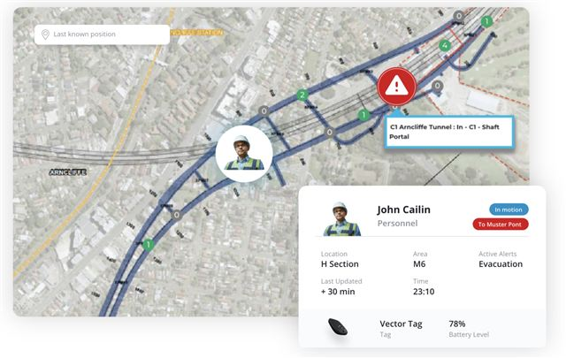

Integrations & Ecosystem
Connected By Design
Operational Intelligence becomes more powerful when information works together. Most organisations already have technology investments.
The iottag platform helps organisations connect and gain more value from the systems they already use.
Data Lake
Connecting The Operational Environment
No single system can understand an operation. Atlas connects operational systems, sensors and technologies into one Operational Intelligence platform, combining information from across the environment to create the context needed to understand performance, identify emerging risk and continuously improve operations.
A Sample Of The Many Connected Systems:

Fleet systems

Environmental systems

Communications platforms

Access control

Cameras

Emergency Systems

Production systems

Safety technologies
Creating A Shared Operational Understanding
Atlas is designed around open standards, making it easy to connect existing systems and future technologies. Connecting systems is only the beginning. Atlas transforms operational data into operational intelligence by understanding how everything on site interacts in real time.

Open by Design
Connect existing systems without disrupting operations.
Real-Time Intelligence
Combine live operational data into a single operational view.
Built to Scale
From one site to enterprise-wide operations.

Your Operation Already Has the Data.
Atlas Helps You Make Sense of It. Connect your existing technology and unlock Operational Intelligence.